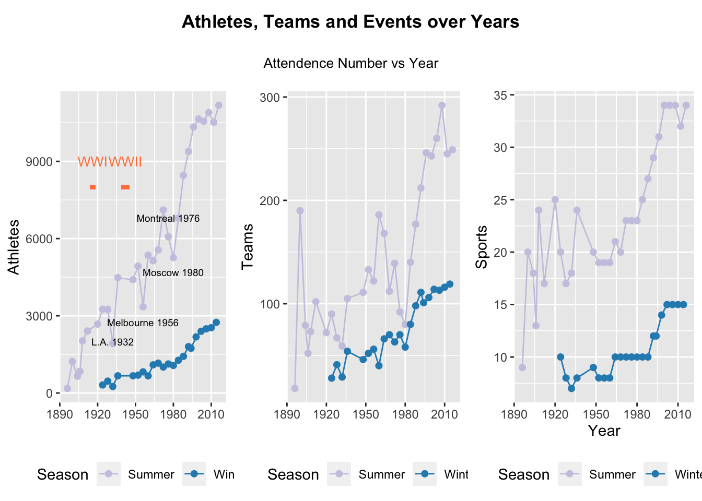
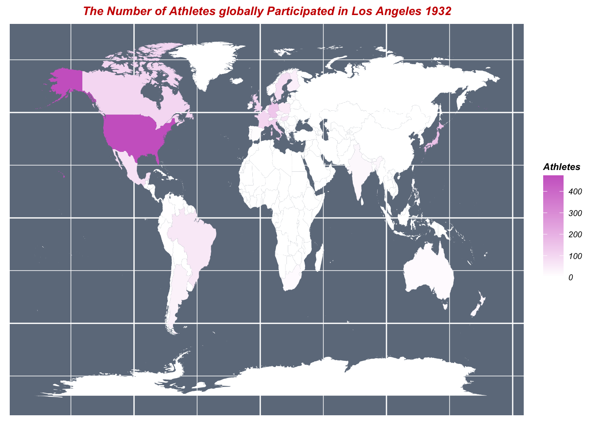
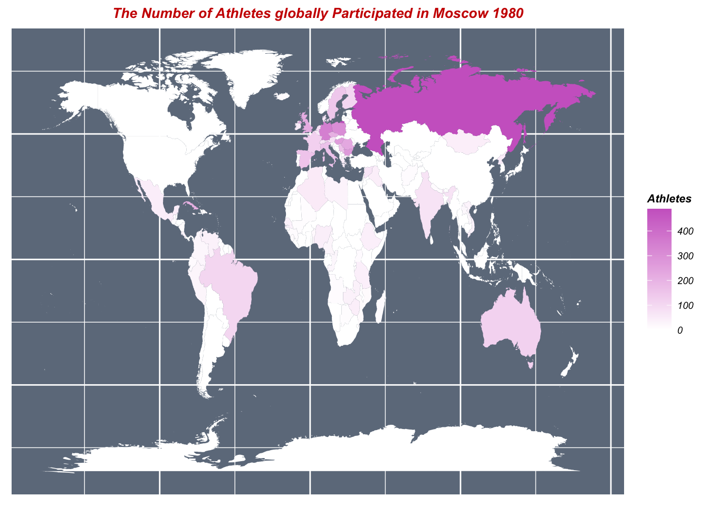
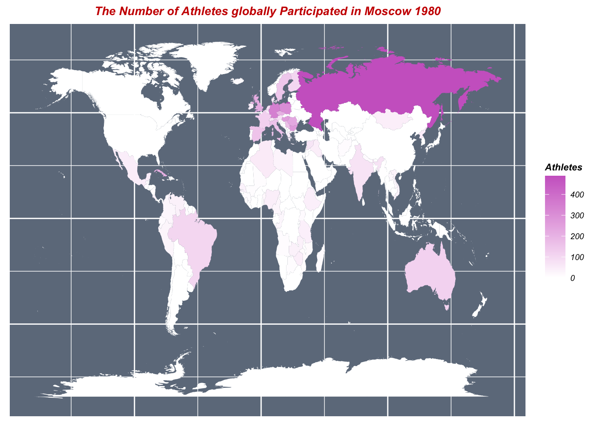
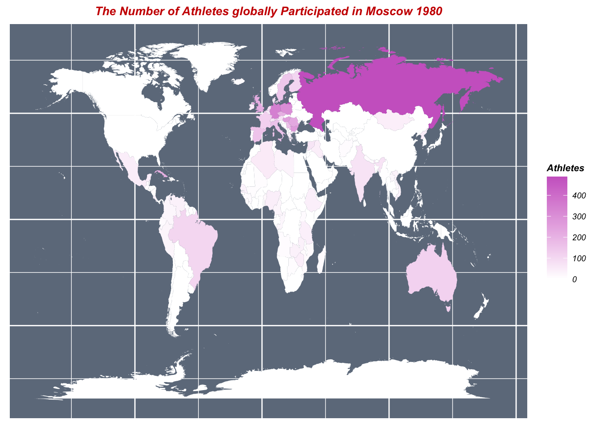

Olympics
1
Introduction
2
Data sources
3
Data transformation
4
Missing values
5
1. Alpine_skiing.csv
5.1
Describe missing pattern by row ————————————————————-
5.2
Describe missing pattern by column ————————————————————-
5.3
Describe Missing pattern by value ————————————————————-
6
2. ‘Olympic Athletes and Events.csv’
7
Results
8
Q1: As economics exploded, what was the development of the 120 years Olympics from 1986 to 2016?
8.1
Pic 1
8.2
Pic 2
9
Q2: Since the 2022 Winter Olympics was held this year, what about the development of Alpine Skiing in the Winter Olympics?
9.1
Pic 3
9.2
Pic 4
9.3
Pic 6
10
Interactive component
10.1
Q3: Which countries are the most dominant over the history of Olympics?
11
Q4: What is the Participation Ratio of Men to Women changes over time? Is this ratio increased or decreased?
11.1
Interactive 2
11.2
Interactive 3
12
Conclusion
Published with bookdown
Olympics
Chapter 8
Q1: As economics exploded, what was the development of the 120 years Olympics from 1986 to 2016?
8.1
Pic 1

8.2
Pic 2



 
